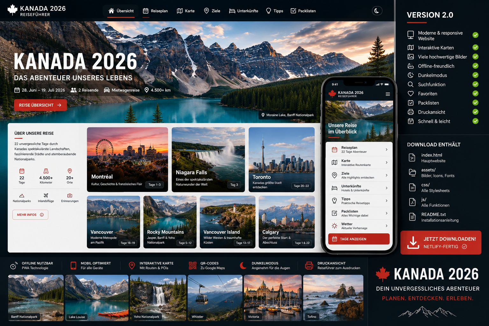

Phase 2
Interaktive Reisefunktionen
Diese Version ergänzt Fortschrittsanzeige, Dunkelmodus, Packliste, Tages-Checklisten und persönliche Notizen. Deine Haken und Notizen werden lokal im Browser gespeichert.
🎒 Reise-Packliste
Reisepässe, ESTA/eTA, Führerscheine und Kreditkarten prüfen Flugunterlagen, Hotelvoucher und Mietwagenvoucher offline speichern Navi/Handyhalterung, Ladekabel, Powerbank und Sonnenbrille einpacken Regenjacke, Fleece, bequeme Schuhe und Tagesrucksack Reiseapotheke, Medikamente, Pflaster, Sonnencreme, Mückenschutz Für Nationalparks: Abstand zu Wildtieren, keine Lebensmittel offen im Auto
⚙️ Bedienung
Oben läuft ein Fortschrittsbalken beim Scrollen.
🌙 schaltet den Dunkelmodus ein und aus.
↑ springt zurück nach oben.
Jede Tageskarte hat eine eigene Checkliste und Notizbox.
Phase 3
Karten & Routen
Jeder Reisetag hat jetzt eine eigene Kartenbox mit direkten Links zu Tagesroute, Hotel, Highlights, Fotospots und Essens-/Pausenvorschlägen. Die Links öffnen Google Maps in einem neuen Tab.
Hinweis: Google‑Maps‑Routen sind als Startpunkt gedacht. Vor Ort bitte Verkehr, Fähren, Sperrungen, Öffnungszeiten und Parkplatzregeln aktuell prüfen.

Premium Edition
Kanada 2026 als moderne Reise-Website
Die interaktive Website enthält Tagespläne, Kartenlinks, Checklisten, Notizen, Favoriten, Suche und eine druckfreundliche Ansicht.
Woche 1-3
Titelbilder für die drei Reiseetappen
Ostkanada, Westküste und Rocky Mountains sind als visuelle Kapiteltrenner gestaltet.
Wetter
Wetterhinweis für Juli 2026
Eine echte Tagesprognose ist erst kurz vor der Reise zuverlässig. Deshalb enthält jeder Tag typisches Juli-Wetter, Kleidungsempfehlungen und einen Link zur aktuellen Vorhersage.
Suchen & Filtern
Was suchst du?
Alle Tage
✈️ Flüge
⛴️ Fähren
🏨 Hotels
🏔️ Parks
🍽️ Essen
❤️ Favoriten
22 Reisetage sichtbar
Druck-Tipp: Mit dem Button „Drucken“ kannst du die Website als PDF speichern. Die interaktiven Bedienelemente werden in der Druckansicht ausgeblendet.
Phase 1
Route & Tagesnavigation
Die Reise ist jetzt taggenau gegliedert. Jeder Tag enthält Programm, Route, Hotel, Essensideen, Fotospots, Hinweise und einen direkten Google‑Maps‑Button.
Woche 1 Montréal – Kingston – Niagara – Toronto Ankunft, Ostkanada, Niagara Falls und Toronto.
Woche 2 Vancouver & Vancouver Island Vancouver, Fähre, Victoria, Ucluelet und Nanaimo.
Woche 3 Whistler – Golden – Canmore – Calgary Sea to Sky, Rockies, Banff-Region und Rückflug.
Woche 1
Ostkanada: Montréal, Kingston, Niagara & Toronto Städte, Geschichte, Wasserfälle und der Auftakt der Reise.
Woche 1
Montréal – Kingston – Niagara – Toronto
♡ Favorit
Woche 1 · Tag 1 · Sa., 04.07.2026
Frankfurt → Montréal
✈️ Flugtag 🚗 Mietwagen 1 🏨 Montréal
Route Frankfurt – Montréal – Hotel Faubourg Montréal
Fahrzeit / Ablauf Nach Ankunft nur kurze Stadtfahrt; zuerst Gepäck, Mietwagen und Check-in.
Übernachtung Hotel Faubourg Montréal, 155 René-Lévesque Blvd E, Montréal
📅 Tagesprogramm AC845 Frankfurt 09:55 → Montréal 11:45. Mietwagenübernahme Montréal Airport um 13:00 Uhr bei Alamo. Ankommen, Hotel beziehen, kurzer Spaziergang in Richtung Old Montréal / Old Port. 🍽️ Essen & Pausen Old Montréal: Brasserie oder Bistro in Hotelnähe Unkompliziert: Pub/Brasserie rund um Place Jacques-Cartier Später Snack: Poutine oder Bagel als Kanada-Auftakt 📸 Fotospots Old Port Place Jacques-Cartier Abendlicht am Riesenrad La Grande Roue
Hinweis: Nach dem Langstreckenflug nicht zu viel einplanen. Priorität: Auto übernehmen, Gepäck sortieren, ruhig ankommen.
💡 Fun Fact / Hintergrund Montréal verbindet französische, britische und nordamerikanische Einflüsse – ideal als kultureller Einstieg in Kanada.
🌦️ Wetter & Kleidung
Ort Montréal
Typisch im Juli 19–27 °C
Erwartung warm, teils schwül; Gewitter möglich
Packhinweis leichte Kleidung, Regenjacke
Aktuelle Wettervorhersage öffnen
♡ Favorit
Woche 1 · Tag 2 · So., 05.07.2026
Montréal Altstadt & Mount Royal
🚶 Stadttag 📸 Aussicht 🍽️ Genuss
Route Old Montréal – Notre-Dame – Old Port – Mount Royal
Fahrzeit / Ablauf Innerstädtisch; Auto möglichst stehen lassen.
Übernachtung Hotel Faubourg Montréal, 155 René-Lévesque Blvd E, Montréal
📅 Tagesprogramm Vormittag: Old Montréal und Notre-Dame Basilica von außen/innen. Mittag: Old Port und Waterfront. Nachmittag: Mount Royal Aussichtspunkt. Abend: Essen in Old Montréal oder Mile End. 🍽️ Essen & Pausen Kyo Bar Japonais / Old Montréal Gaspar Brasserie / Old Montréal Fairmount Bagel oder Café Olimpico im Mile End 📸 Fotospots Notre-Dame Basilica Skyline vom Mount Royal Kopfsteinpflaster in Old Montréal
Hinweis: Für Notre-Dame und beliebte Restaurants besser vorher Zeiten prüfen bzw. reservieren.
💡 Fun Fact / Hintergrund Mount Royal gab der Stadt ihren Namen – Montréal leitet sich von Mont Royal ab.
🌦️ Wetter & Kleidung
Ort Montréal
Typisch im Juli 19–27 °C
Erwartung warmer Stadttag
Packhinweis Wasser, Sonnenschutz, bequeme Schuhe
Aktuelle Wettervorhersage öffnen
♡ Favorit
Woche 1 · Tag 3 · Mo., 06.07.2026
Montréal → Kingston
🚗 Fahrtag 🏨 Kingston 🍁 Ontario
Fahrzeit / Ablauf ca. 290 km / etwa 3–3,5 Std. reine Fahrzeit.
Übernachtung Hampton Inn by Hilton Kingston, 125 Innovation Drive, Kingston
📅 Tagesprogramm Nach dem Frühstück Auschecken und Fahrt nach Kingston. Nachmittag: Waterfront, City Hall, Confederation Park. Optional: kurze Bootstour oder Spaziergang am Ontariosee. 🍽️ Essen & Pausen Kingston Waterfront Restaurants Atomica Kitchen / Downtown Kingston Brewing Company für unkomplizierten Abend 📸 Fotospots Kingston City Hall Waterfront Boote am Ontariosee
Hinweis: Vor dem Verlassen von Montréal tanken oder spätestens auf halber Strecke Pause einplanen.
💡 Fun Fact / Hintergrund Kingston war 1841 kurzzeitig Hauptstadt der Province of Canada.
♡ Favorit
Woche 1 · Tag 4 · Di., 07.07.2026
Kingston & Thousand Islands
⛴️ Boot 🌊 Inseln 📸 Fototag
Route Kingston – Gananoque / Thousand Islands – Kingston
Fahrzeit / Ablauf je nach Bootsanleger ca. 35–45 Minuten pro Richtung.
Übernachtung Hampton Inn by Hilton Kingston, 125 Innovation Drive, Kingston
📅 Tagesprogramm Vormittag: Thousand-Islands-Bootstour ab Kingston oder Gananoque. Nachmittag: Kingston Altstadt, Waterfront Trail oder Fort Henry von außen. Abend: gemütliches Essen in Downtown Kingston. 🍽️ Essen & Pausen Pan Chancho Bakery & Café Tango Nuevo Dianne’s Fish Shack & Smokehouse 📸 Fotospots Thousand Islands vom Boot Boldt Castle vom Wasser Kingston Waterfront
Hinweis: Bootstouren rechtzeitig reservieren, vor allem bei gutem Wetter.
💡 Fun Fact / Hintergrund Die Thousand Islands bestehen aus deutlich mehr als 1.000 Inseln – einige sind winzig, andere groß genug für ganze Anwesen.
🌦️ Wetter & Kleidung
Ort Thousand Islands
Typisch im Juli 18–26 °C
Erwartung auf dem Wasser kühler
Packhinweis Windjacke, Sonnencreme
Aktuelle Wettervorhersage öffnen
♡ Favorit
Woche 1 · Tag 5 · Mi., 08.07.2026
Kingston → Niagara Falls
🚗 Fahrtag 🌊 Niagara 🏨 Falls
Route Kingston – Toronto-Umfahrung – Niagara Falls
Fahrzeit / Ablauf ca. 390–430 km / etwa 4,5–5,5 Std. plus Pausen.
Übernachtung Best Western Plus Cairn Croft Hotel, 6400 Lundy’s Lane, Niagara Falls
📅 Tagesprogramm Früh starten, weil der Verkehr rund um Toronto bremsen kann. Nachmittag/Abend: erster Blick auf die Fälle. Abends: Illumination der Wasserfälle ansehen. 🍽️ Essen & Pausen Table Rock Market Weinküchen in Niagara-on-the-Lake Casual Dinner an der Lundy’s Lane 📸 Fotospots Horseshoe Falls American Falls Illuminierte Fälle am Abend
Hinweis: Poncho oder Regenjacke bereithalten. An den Aussichtspunkten wird man schnell nass.
💡 Fun Fact / Hintergrund Die Horseshoe Falls liegen überwiegend auf kanadischer Seite und sind der spektakulärste Teil der Niagara Falls.
🌦️ Wetter & Kleidung
Ort Niagara Falls
Typisch im Juli 19–28 °C
Erwartung warm, Sprühnebel an den Fällen
Packhinweis Poncho, rutschfeste Schuhe
Aktuelle Wettervorhersage öffnen
♡ Favorit
Woche 1 · Tag 6 · Do., 09.07.2026
Niagara Falls → Toronto
🌊 Wasserfälle 🍷 Niagara 🏙️ Toronto
Route Niagara Falls – Niagara-on-the-Lake – Toronto
Fahrzeit / Ablauf ca. 130–160 km / etwa 2–2,5 Std. ohne längere Stopps.
Übernachtung Courtyard Toronto Downtown, 475 Yonge Street, Toronto
📅 Tagesprogramm Vormittag: Niagara Falls, Table Rock, optional Journey Behind the Falls. Mittag: Niagara Parkway und Niagara-on-the-Lake. Nachmittag: Weiterfahrt nach Toronto, Check-in. Abend: Spaziergang Yonge Street / Downtown. 🍽️ Essen & Pausen Niagara-on-the-Lake Winery Lunch Toronto: Richmond Station Toronto: Pai Northern Thai Kitchen 📸 Fotospots Niagara Parkway Niagara-on-the-Lake Toronto Skyline bei Ankunft
Hinweis: In Toronto lieber direkt am Hotel parken und viele Wege zu Fuß/mit ÖPNV machen.
💡 Fun Fact / Hintergrund Niagara-on-the-Lake gilt als eine der schönsten Kleinstädte Ontarios.
♡ Favorit
Woche 1 · Tag 7 · Fr., 10.07.2026
Toronto intensiv
🏙️ Stadt 📸 Skyline 🍽️ Downtown
Route CN Tower – Harbourfront – St. Lawrence Market – Distillery District
Fahrzeit / Ablauf Auto stehen lassen; Toronto am besten zu Fuß, per Streetcar oder Subway.
Übernachtung Courtyard Toronto Downtown, 475 Yonge Street, Toronto
📅 Tagesprogramm Vormittag: CN Tower / Harbourfront. Mittag: St. Lawrence Market. Nachmittag: Distillery District oder Royal Ontario Museum. Abend: letzter Abend in Ostkanada. 🍽️ Essen & Pausen St. Lawrence Market Aloette Terroni oder Pai 📸 Fotospots CN Tower Toronto Islands Blick auf Skyline Distillery District
Hinweis: Für Skyline-Fotos lohnt die Fähre oder ein kurzer Ausflug Richtung Toronto Islands, wenn genug Zeit ist.
💡 Fun Fact / Hintergrund Toronto ist Kanadas größte Stadt und eine der vielfältigsten Metropolen Nordamerikas.
Woche 2
Vancouver & Vancouver Island Meer, Fähren, Regenwald, Pazifikstrände und Inselgefühl.
Woche 2
Vancouver & Vancouver Island
♡ Favorit
Woche 2 · Tag 8 · Sa., 11.07.2026
Toronto → Vancouver
✈️ Inlandsflug 🚗 Rückgabe Mietwagen 1 🏨 Vancouver
Route Toronto Airport – Vancouver Downtown
Fahrzeit / Ablauf Mietwagenrückgabe Toronto Pearson 07:00 Uhr; danach Flug.
Übernachtung Sandman Hotel Vancouver Downtown, 180 West Georgia Street, Vancouver
📅 Tagesprogramm Mietwagenrückgabe Toronto Pearson um 07:00 Uhr. AC107 Toronto 09:00 → Vancouver 10:50. Ankunft in Vancouver, Transfer/Taxi oder ÖPNV nach Downtown. Nachmittag: Gastown oder Waterfront als leichter Einstieg. 🍽️ Essen & Pausen Gastown: Water Street Café Downtown: Cactus Club Café Coal Harbour Granville/Robson Umgebung für unkompliziertes Essen 📸 Fotospots Canada Place Gastown Steam Clock Waterfront Skyline
Hinweis: Durch die Zeitverschiebung wirkt der Tag lang – trotzdem nicht überladen.
💡 Fun Fact / Hintergrund Vancouver liegt zwischen Meer und Bergen; genau dieser Kontrast macht die Stadt so besonders.
♡ Favorit
Woche 2 · Tag 9 · So., 12.07.2026
Vancouver: Stanley Park & Granville Island
🌲 Park 🌊 Waterfront 🍽️ Markt
Route Stanley Park – Seawall – Granville Island – Gastown
Fahrzeit / Ablauf Auto noch nicht nötig; ideal zu Fuß, per Taxi oder Aquabus.
Übernachtung Sandman Hotel Vancouver Downtown, 180 West Georgia Street, Vancouver
📅 Tagesprogramm Vormittag: Stanley Park und Seawall. Mittag: Granville Island Public Market. Nachmittag: Gastown / Waterfront. Abend: letzter Abend ohne Mietwagen. 🍽️ Essen & Pausen Granville Island Public Market Tacofino / Vancouver Miku für Sushi mit Waterfront-Lage 📸 Fotospots Totempfähle Stanley Park Lions Gate Bridge Granville Island Marina
Hinweis: Granville Island ist besonders schön zum Essen und Schlendern; zur Hauptzeit wird es voll.
💡 Fun Fact / Hintergrund Stanley Park ist größer als der New Yorker Central Park.
♡ Favorit
Woche 2 · Tag 10 · Mo., 13.07.2026
Vancouver → Victoria
🚗 Mietwagen 2 ⛴️ Fähre 🏨 Victoria
Route Vancouver Airport – Tsawwassen – Swartz Bay – Victoria
Fahrzeit / Ablauf ca. 35 km bis Tsawwassen, Fähre ca. 1,5 Std., danach ca. 30 km nach Victoria.
Übernachtung Royal Scot Hotel & Suites, 425 Quebec Street, Victoria
📅 Tagesprogramm Mietwagenübernahme Vancouver Airport um 10:00 Uhr bei Alamo. Fahrt zum Tsawwassen Ferry Terminal. Fähre nach Swartz Bay, dann Weiterfahrt nach Victoria. Nachmittag/Abend: Inner Harbour, Parliament Buildings, Fisherman’s Wharf. 🍽️ Essen & Pausen Red Fish Blue Fish 10 Acres Bistro Nourish Kitchen & Café 📸 Fotospots BC Ferries Deckblick Victoria Inner Harbour Parliament Buildings bei Abendlicht
Hinweis: Fähre mit Auto möglichst vorab reservieren und rechtzeitig am Terminal sein.
💡 Fun Fact / Hintergrund Victoria wirkt britischer als viele andere Orte in Kanada – inklusive Gärten, Teekultur und viktorianischer Architektur.
♡ Favorit
Woche 2 · Tag 11 · Di., 14.07.2026
Victoria → Ucluelet
🚗 Inselquerung 🌲 Cathedral Grove 🏨 Ucluelet
Route Victoria – Duncan – Cathedral Grove – Port Alberni – Ucluelet
Fahrzeit / Ablauf ca. 295 km / etwa 4–5 Std. plus Stopps.
Übernachtung Water’s Edge Shoreside Suites, 1971 Harbour Crescent, Ucluelet
📅 Tagesprogramm Frühstück in Victoria. Fahrt über Vancouver Island mit Stopp bei Cathedral Grove. Weiter über Port Alberni an die Pazifikküste. Ankunft in Ucluelet, kurzer Spaziergang am Hafen. 🍽️ Essen & Pausen Victoria: Frühstück im Café Port Alberni: Lunch-Stopp Ucluelet: Pluvio Restaurant oder Heartwood Kitchen 📸 Fotospots Cathedral Grove Kennedy Lake unterwegs Ucluelet Harbour
Hinweis: Die Strecke ist kurvig. Lieber tagsüber fahren und Pausen fest einplanen.
💡 Fun Fact / Hintergrund Cathedral Grove beherbergt einige der eindrucksvollsten alten Douglasien auf Vancouver Island.
♡ Favorit
Woche 2 · Tag 12 · Mi., 15.07.2026
Pacific Rim: Long Beach & Wild Pacific Trail
🌊 Pazifik 🥾 Spaziergänge 📸 Natur
Route Ucluelet – Pacific Rim National Park – Tofino optional
Fahrzeit / Ablauf kurze Küstenfahrten; je nach Tofino-Abstecher ca. 80–100 km gesamt.
Übernachtung Water’s Edge Shoreside Suites, 1971 Harbour Crescent, Ucluelet
📅 Tagesprogramm Vormittag: Wild Pacific Trail in Ucluelet. Mittag/Nachmittag: Long Beach und Rainforest Trail. Optional: Tofino für Café, Strand und Abendessen. Abend: Sonnenuntergang an der Pazifikküste. 🍽️ Essen & Pausen Ucluelet: Heartwood Kitchen Tofino: Tacofino Tofino: Shelter Restaurant 📸 Fotospots Wild Pacific Trail Long Beach Rainforest Trail Holzstege
Hinweis: Wetterfeste Kleidung mitnehmen – an der Pazifikküste wechseln Sonne, Nebel und Regen schnell.
💡 Fun Fact / Hintergrund Der Pacific Rim National Park ist bekannt für Regenwald, Brandung und lange Strände.
🌦️ Wetter & Kleidung
Ort Pacific Rim
Typisch im Juli 11–18 °C
Erwartung Küstenwetter, schnell wechselnd
Packhinweis Regenjacke, Wanderschuhe
Aktuelle Wettervorhersage öffnen
♡ Favorit
Woche 2 · Tag 13 · Do., 16.07.2026
Ucluelet → Nanaimo
🚗 Fahrtag 🌊 Hafen 🏨 Nanaimo
Route Ucluelet – Port Alberni – Nanaimo
Fahrzeit / Ablauf ca. 180 km / etwa 2,5–3 Std. reine Fahrzeit.
Übernachtung Best Western Dorchester Hotel, 70 Church Street, Nanaimo
📅 Tagesprogramm Gemütlicher Start in Ucluelet. Rückfahrt über Port Alberni nach Nanaimo. Nachmittag: Hafenpromenade oder kurzer Stadtbummel. Abend: ruhig essen und für den nächsten langen Fahrtag vorbereiten. 🍽️ Essen & Pausen Nanaimo Bar probieren The Nest Bistro Waterfront Restaurant / Pub 📸 Fotospots Nanaimo Harbour Blick auf Newcastle Island Altstadt / Hafen
Hinweis: Nanaimo ist ideal als Zwischenstopp vor der Fähre zurück aufs Festland.
💡 Fun Fact / Hintergrund Die Stadt ist Namensgeberin der Nanaimo Bar – einem kanadischen Dessertklassiker.
Woche 3
Whistler, Rockies & Calgary Panoramastraßen, Bergseen, Nationalparks und Rückflug.
Woche 3
Whistler – Golden – Canmore – Calgary
♡ Favorit
Woche 3 · Tag 14 · Fr., 17.07.2026
Nanaimo → Whistler
⛴️ Fähre 🏔️ Sea to Sky 🏨 Whistler
Route Nanaimo – Horseshoe Bay – Sea to Sky Highway – Whistler
Fahrzeit / Ablauf Fähre plus ca. 120 km Festlandfahrt; mit Wartezeit als voller Reisetag planen.
Übernachtung Aava Whistler, 4005 Whistler Way, Whistler
📅 Tagesprogramm Fähre Nanaimo/Departure Bay → Horseshoe Bay. Weiterfahrt über den Sea to Sky Highway. Stopps: Shannon Falls, Squamish, Aussichtspunkte. Ankunft in Whistler und Village-Spaziergang. 🍽️ Essen & Pausen Whistler Village: Earls / Araxi / The Mexican Corner Squamish Lunch-Stopp optional Café in Whistler Village 📸 Fotospots BC Ferries Shannon Falls Sea to Sky Aussicht Whistler Village
Hinweis: Fähre frühzeitig buchen und Puffer einplanen – dieser Tag hängt stark von der Fährverbindung ab.
💡 Fun Fact / Hintergrund Der Sea to Sky Highway zählt zu den schönsten Küsten-Berg-Straßen Kanadas.
♡ Favorit
Woche 3 · Tag 15 · Sa., 18.07.2026
Whistler erleben
🏔️ Bergtag 🚶 Village 📸 Aussicht
Route Whistler Village – Lost Lake – optional Peak 2 Peak
Fahrzeit / Ablauf Auto kann stehen bleiben.
Übernachtung Aava Whistler, 4005 Whistler Way, Whistler
📅 Tagesprogramm Vormittag: Whistler Village und Lost Lake. Optional: Peak 2 Peak Gondola bei gutem Wetter. Nachmittag: Café, Shops oder leichter Trail. Abend: Essen im Village. 🍽️ Essen & Pausen Purebread Whistler Araxi 21 Steps Kitchen + Bar 📸 Fotospots Whistler Village Lost Lake Bergpanorama
Hinweis: Bei Gondelplänen Wetter prüfen – Aussicht lohnt nur bei guten Bedingungen.
💡 Fun Fact / Hintergrund Whistler war einer der Austragungsorte der Olympischen Winterspiele 2010.
♡ Favorit
Woche 3 · Tag 16 · So., 19.07.2026
Whistler → Kamloops
🚗 Fahrtag 🌄 Inland BC 🏨 Kamloops
Route Whistler – Pemberton – Lillooet – Kamloops
Fahrzeit / Ablauf ca. 300 km / etwa 4,5–5,5 Std.; landschaftlich schön, aber kurvig.
Übernachtung Accent Inn Kamloops, 1325 Columbia Street West, Kamloops
📅 Tagesprogramm Früh starten und die bergige Strecke entspannt fahren. Stopps bei Aussichtspunkten rund um Pemberton/Lillooet. Ankunft Kamloops, kurzer Spaziergang oder ruhiger Abend. 🍽️ Essen & Pausen Kamloops: Brownstone Restaurant Mittagspause in Lillooet oder unterwegs Unkompliziertes Dinner nahe Hotel 📸 Fotospots Pemberton Valley Duffey Lake Road Kamloops Abendlicht
Hinweis: Vor der Bergstrecke tanken und Wasser/Snacks im Auto haben.
💡 Fun Fact / Hintergrund Die Landschaft wechselt auf dieser Etappe deutlich: von alpinen Bergen zu trockenerem Interior-Klima.
♡ Favorit
Woche 3 · Tag 17 · Mo., 20.07.2026
Kamloops → Golden
🚗 Lange Etappe 🏔️ Rockies 🏨 Golden
Route Kamloops – Revelstoke – Rogers Pass – Golden
Fahrzeit / Ablauf ca. 360 km / etwa 4–5 Std. plus Stopps.
Übernachtung Whispering Pines, 1335 Palliser Trail, Golden
📅 Tagesprogramm Fahrt Richtung Osten durch das Interior. Stopps: Revelstoke, Rogers Pass, Aussichtspunkte. Ankunft Golden / Kicking Horse Region. Abend: Unterkunft beziehen, Vorräte für die nächsten Tage. 🍽️ Essen & Pausen Revelstoke Lunch-Stopp Golden: Whitetooth Bistro Golden: The Island Restaurant 📸 Fotospots Rogers Pass Columbia River Valley Bergpanorama bei Golden
Hinweis: Diese Etappe ist lang – besser nicht zu spät starten und Pausen aktiv planen.
💡 Fun Fact / Hintergrund Rogers Pass war ein Schlüsselabschnitt beim Bau der kanadischen Eisenbahn durch die Rockies.
♡ Favorit
Woche 3 · Tag 18 · Di., 21.07.2026
Yoho, Lake Louise & Emerald Lake
🏔️ Nationalparks 💧 Seen 📸 Fototag
Route Golden – Yoho National Park – Lake Louise / Emerald Lake – Golden
Fahrzeit / Ablauf Tagesausflug ab Golden; je nach Route ca. 170–230 km gesamt.
Übernachtung Whispering Pines, 1335 Palliser Trail, Golden
📅 Tagesprogramm Frühstart Richtung Yoho National Park. Emerald Lake, Natural Bridge, Field. Optional: Lake Louise je nach Parkplatz-/Shuttlelage. Rückfahrt nach Golden. 🍽️ Essen & Pausen Field: Truffle Pigs Bistro Picknick am Emerald Lake Golden Dinner 📸 Fotospots Emerald Lake Natural Bridge Lake Louise bei frühem Licht
Hinweis: Für Lake Louise/Moraine Lake unbedingt aktuelle Shuttle-/Parkregelungen prüfen.
💡 Fun Fact / Hintergrund Yoho bedeutet in der Sprache der Cree sinngemäß Staunen oder Ehrfurcht – passend zur Landschaft.
♡ Favorit
Woche 3 · Tag 19 · Mi., 22.07.2026
Icefields Parkway / Banff-Region
🏔️ Traumstraße 📸 Aussicht 🐻 Natur
Route Golden – Lake Louise – Icefields Parkway – zurück nach Golden
Fahrzeit / Ablauf je nach Wendepunkt ein langer Tagesausflug; realistisch planen.
Übernachtung Whispering Pines, 1335 Palliser Trail, Golden
📅 Tagesprogramm Sehr früh starten. Peyto Lake / Bow Lake / Aussichtspunkte am Icefields Parkway. Optional bis Saskatchewan River Crossing oder weiter, je nach Energie. Rückfahrt nach Golden. 🍽️ Essen & Pausen Picknick einpacken Lake Louise Village Vorräte Abendessen in Golden 📸 Fotospots Peyto Lake Bow Lake Icefields Parkway Panoramen
Hinweis: Der Icefields Parkway ist landschaftlich grandios, aber Fahrzeiten nicht unterschätzen.
💡 Fun Fact / Hintergrund Der Icefields Parkway gilt als eine der schönsten Panoramastraßen der Welt.
♡ Favorit
Woche 3 · Tag 20 · Do., 23.07.2026
Golden → Canmore
🚗 Wechsel 🏔️ Banff 🏨 Canmore
Route Golden – Lake Louise – Banff – Canmore
Fahrzeit / Ablauf ca. 170 km / etwa 2–2,5 Std. plus Stopps.
Übernachtung Coast Canmore Hotel & Conference Centre, 511 Bow Valley Trail, Canmore
📅 Tagesprogramm Morgens Auschecken in Golden. Stopps in Lake Louise oder Banff je nach Wetter und Interesse. Nachmittag: Canmore Check-in und Spaziergang durch Downtown. Abend: entspannter Bergort statt vollem Banff-Trubel. 🍽️ Essen & Pausen Canmore: The Grizzly Paw Canmore: Communitea Café Banff optional: Park Distillery 📸 Fotospots Castle Mountain Banff Avenue Three Sisters bei Canmore
Hinweis: Canmore ist oft entspannter als Banff und eignet sich sehr gut für den letzten Rockies-Abend.
💡 Fun Fact / Hintergrund Canmore war ebenfalls Olympia-Ort 1988 und ist heute ein beliebter Ausgangspunkt für die Rockies.
♡ Favorit
Woche 3 · Tag 21 · Fr., 24.07.2026
Canmore → Calgary
🏙️ Calgary 🧳 letzter Abend 🏨 Downtown
Fahrzeit / Ablauf ca. 105 km / etwa 1–1,5 Std.
Übernachtung Coast Calgary Downtown Hotel & Suites by APA, 610 4 Avenue SW, Calgary
📅 Tagesprogramm Vormittag: Canmore entspannt genießen oder kurzer Bow River Walk. Fahrt nach Calgary. Nachmittag: Downtown, Calgary Tower, Peace Bridge oder Stephen Avenue. Abend: Gepäck sortieren und Rückflug vorbereiten. 🍽️ Essen & Pausen Calgary: Charcut Roast House Calgary: River Café Stephen Avenue Restaurants 📸 Fotospots Calgary Tower Peace Bridge Skyline am Bow River
Hinweis: Letzten Abend nutzen, um Tankstand, Koffergewicht und Mietwagenrückgabe für den nächsten Tag zu prüfen.
💡 Fun Fact / Hintergrund Calgary ist bekannt als Tor zu den Rockies und für die Calgary Stampede.
♡ Favorit
Rückreise · Tag 22 · Sa., 25.07.2026
Calgary → Frankfurt
✈️ Rückflug 🚗 Mietwagenrückgabe 🏁 Ende der Reise
Route Calgary Downtown – Calgary Airport – Frankfurt
Fahrzeit / Ablauf Mietwagenrückgabe Calgary Airport um 15:00 Uhr.
Übernachtung Rückflug über Nacht
📅 Tagesprogramm Vormittag: entspannt frühstücken, letzte Besorgungen. Mietwagenrückgabe Calgary Airport um 15:00 Uhr. AC7393 Calgary 16:50 → Frankfurt 10:15 Uhr am Folgetag. Ankunft Frankfurt: Sonntag, 26.07.2026. 🍽️ Essen & Pausen Frühstück in Calgary Airport-Snack einplanen Wasserflasche vor Security leeren 📸 Fotospots Letzter Blick auf Calgary Airport-Abflugtafel Reiseabschlussfoto
Hinweis: Genug Puffer für Tankstelle, Mietwagenrückgabe und Gepäckabgabe einplanen.
💡 Fun Fact / Hintergrund Die Reise endet mit einem direkten Transatlantikflug von Alberta zurück nach Deutschland.
🌦️ Wetter & Kleidung
Ort Calgary Airport
Typisch im Juli 10–24 °C
Erwartung für Rückfahrt relevant
Packhinweis Flugkleidung plus Jacke
Aktuelle Wettervorhersage öffnen